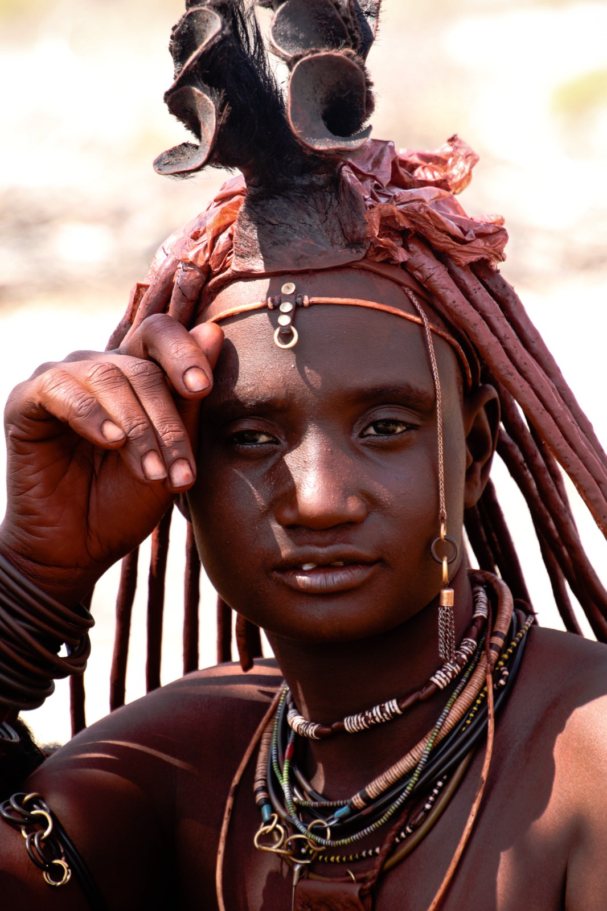

Kaokoland · Damaraland
À la rencontre du peuple Himba
On prend la piste vers les grands espaces du nord pour un échange vrai et respectueux avec l'un des derniers peuples semi-nomades d'Afrique.
On prend la piste vers les grands espaces du nord pour un échange vrai et respectueux avec l'un des derniers peuples semi-nomades d'Afrique.
Loin des clichés, la rencontre avec les Himba se vit dans la simplicité. Le temps d'un moment partagé, on découvre un mode de vie, des gestes, une dignité — et l'on repart un peu différent.
Dans le Kaokoland, terre reculée du nord-ouest, les Himba perpétuent leurs traditions. Femmes à la peau ocrée, troupeaux, habitat de terre : une culture vivante que l'on approche avec tact, accompagnés de la bonne personne. On organise ces rencontres dans le respect, à l'écart du tourisme de masse, pour qu'elles soient justes et sincères de part et d'autre.
Comment on vit ce moment ensemble — sans précipitation, dans le respect, du trajet à l'échange.
Départ tranquille vers les villages du Kaokoland. Les paysages s'ouvrent, immenses et minéraux — le voyage commence déjà.
En chemin, notre accompagnateur local nous transmet les codes : comment saluer, demander avant de photographier. On arrive prêts, dans le bon état d'esprit.
Pas de course : on prend le temps. On s'assoit, on échange, on laisse la rencontre se faire naturellement.
Les femmes nous montrent l'otjize, ce mélange d'ocre et de beurre dont elles s'enduisent. Les enfants jouent autour de nous, on rit, on apprend.
Sourires, gestes, regards. On repart touchés, avec le sentiment d'avoir vraiment rencontré l'autre.
On reprend la route à travers des paysages spectaculaires, des images et des émotions plein la tête.
La visite se fait toujours avec un médiateur local, dans le respect mutuel et avec l'accord du village. Une participation soutient directement la communauté : une rencontre sincère, jamais un spectacle.
On prend le temps. Les femmes expliquent l'otjize, les enfants rient, on échange par gestes et sourires. Un instant d'humanité pure.


Pour les atteindre, on traverse des paysages immenses et minéraux, parmi les plus sauvages du pays. Le trajet jusqu'à eux fait déjà partie de l'expérience.
Chaque lieu a sa propre page — suivez le fil, laissez-vous guider d'un point à l'autre.

Des milliers de gravures rupestres millénaires à ciel ouvert, classées au patrimoine mondial.
Découvrir ce lieu
Le « Cervin de Namibie » : un dôme de granit rouge surgissant de la plaine, royaume des étoiles.
Découvrir ce lieu
Sur les traces des rares éléphants adaptés au désert, dans les rivières asséchées du Damaraland.
Découvrir ce lieu"La rencontre la plus marquante du séjour. Tout en pudeur et en respect — on était à mille lieues du folklore pour touristes."
"Échanger avec ces femmes, voir leur quotidien… ça remet les choses à leur place. Un privilège, organisé avec beaucoup de délicatesse."
"J'appréhendais ce genre de visite. Au final, un vrai moment d'humanité, sincère des deux côtés. C'est tout ce que j'espérais."
Il s'intègre dans un itinéraire 100% sur mesure, pensé autour de vos envies. Parlons-en lors d'un appel découverte — offert et sans engagement.